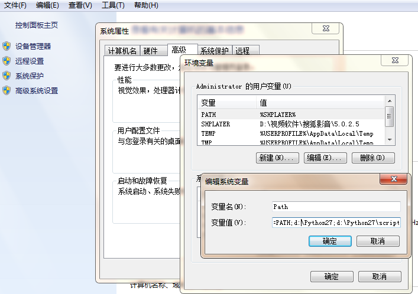
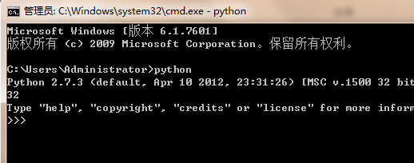
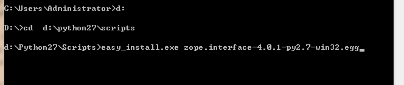
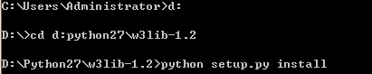
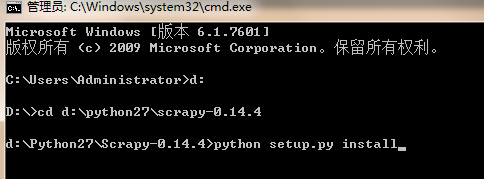

目录
- 安装python，我选择的安装目录：d:\Python27（这个可以随便选择）
- 添加环境变量，在桌面打开右键点击计算机，进入如下界面，然后在在变量值里面加入
d：\python27;d:\python27\scripts;

- 验证Python环境是否配置好，同时按住键盘上的win+r打开如下窗口，输入cmd，进入dos窗口，在命令符后输入：python，如果出现下图就表示Python已经配置好 
- setuptools的安装,安装过程略。
- Zope.Interface的安装,安装过程如下：
- 将下载得到的zope.interface复制到D:\Python27\Scripts文件夹下,打开cmd，进入dos窗口，输入以下命令： 
- 验证是否安装成功,如果输入：import zope.interface没有报错就表示已经安装成功.
- Twisted的安装,安装过程如下：
- 将下载得到的zope.interface复制到D:\Python27\Scripts文件夹下,打开cmd，进入dos窗口，输入以下命令：
- w3lib的安装,安装过程如下：
- 将下载得到的w3lib文件夹拷贝到D:\Python27文件夹下
- 同样打开cmd，进入dos窗口，在命令符后输入如下命令： 
- 验证是否安装成功,如果输入：import w3lib没有报错就表示已经安装成功.
- libxml2的安装,安装过程略
- pyOpenSSL的安装,安装过程略
- Scrapy的下载。
- 首先将下载得到的Scrapy拷贝到D:\Python27文件夹下
- 同样打开cmd，进入dos窗口，在命令符后输入如下命令： 
- 验证是否安装成功,如果输入：scrapy没有报错就表示已经安装成功.
Python下载以及环境配置
首先我们必须先下载Python软件，在这里我选用的是Python2.7.3版本。
安装scrapy前的环境搭建
安装Twisted模块
安装Zope.Interface
安装Twisted
安装w3lib
安装libxml2
安装pyOpenSSL
安装scrapy
以上就是安装Scrapy的全过程了，赶紧用它抓取数据吧.
MENBIN 地点：中国--大连--东财